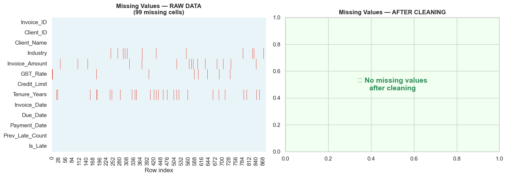
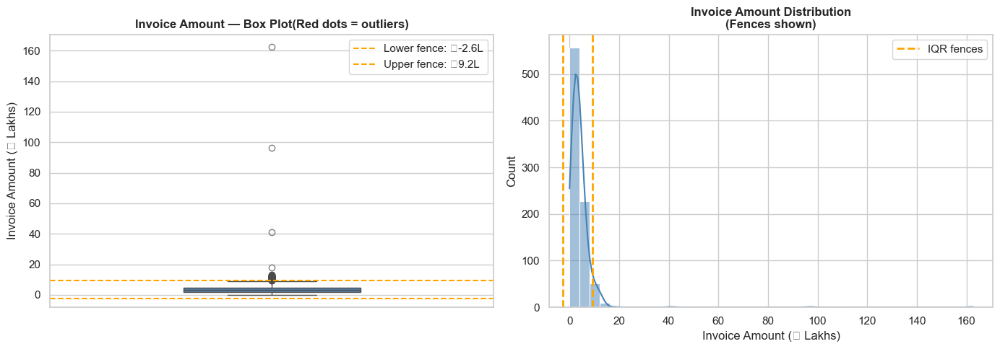
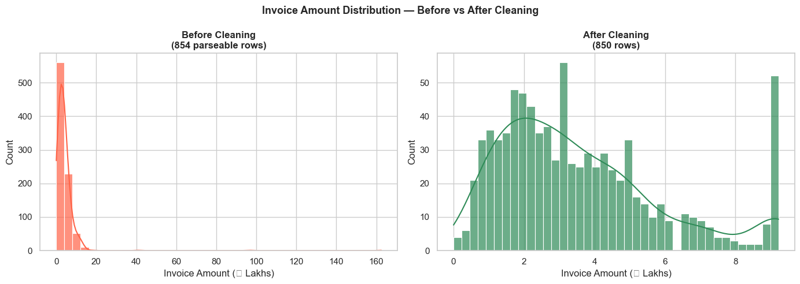
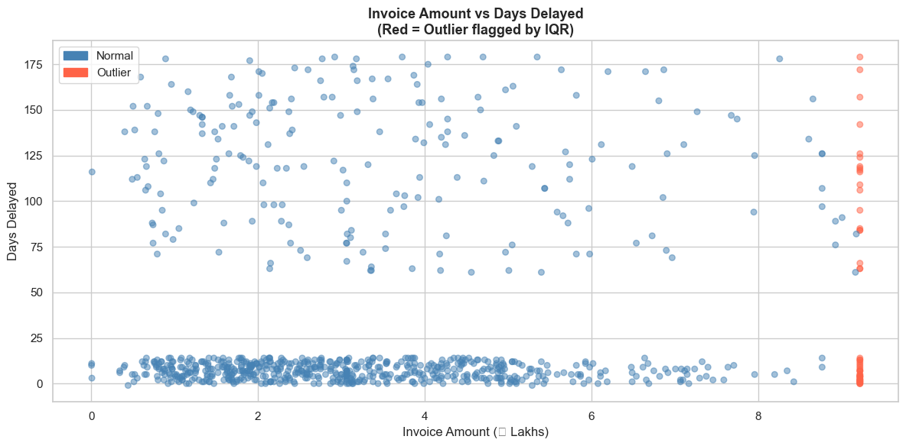

🧹 Module 07: Data Cleaning & Preprocessing
Turning Raw, Messy Data into Analysis-Ready Data
Pre-requisite: Module 06 (CRISP-DM Process)
Estimated time: 4–5 hours
Session structure: Why Clean → Types of Dirty Data → Hands-on Cleaning Techniques → Pipeline → Practice
📋 Table of Contents
| Part | Section | Topic |
|---|---|---|
| Part 1: Why Clean? | 1 | The Cost of Dirty Data |
| 2 | The Garbage In, Garbage Out Principle | |
| Part 2: Types of Dirty Data | 3 | The 5 Categories of Data Quality Issues |
| 4 | Decision Framework — Which Fix to Apply | |
| Part 3: Hands-on Cleaning | 5 | Load the Dirty Dataset |
| 6 | Fixing Data Types | |
| 7 | Handling Missing Values | |
| 8 | Removing Duplicates | |
| 9 | Standardising Text & Categories | |
| 10 | Detecting & Handling Outliers | |
| 11 | Business Rule Validation | |
| 12 | Building a Reusable Cleaning Pipeline | |
| 13 | Before vs After — Quality Report | |
| Part 4: Practice | 14 | Practice Exercises |
Part 1: Why Data Cleaning Matters
Section 1: The Cost of Dirty Data
The scale of the problem
IBM estimated in 2016 that dirty data costs the US economy $3.1 trillion per year. In India, the Reserve Bank of India has flagged data quality as a primary challenge in financial supervision. For a CA firm or finance team, dirty data creates:
| Problem | Business consequence |
|---|---|
| Missing amounts on invoices | Understated revenue; incorrect GST computation |
| Duplicate transactions | Double-counting; inflated P&L |
| Wrong data types (text instead of numbers) | Analysis fails silently or produces wrong results |
| Inconsistent party names | Same client shown as 3 separate entities in reports |
| Outliers from data entry errors | Distorted averages; misleading trends |
| Logic errors (payment before invoice) | Invalid audit evidence |
A real-world CA scenario
A firm is preparing a Quarterly Management Report for a manufacturing client. The data analyst runs the P&L script — revenue for Q2 comes out at ₹47 crores.
The CFO is alarmed. Last quarter was ₹38 crores. Was there really ₹9 crore growth?
Investigation reveals:
- One invoice of ₹9.2 crores was accidentally entered twice in the ERP
- Two invoices had amounts entered as ₹8,50,000 (text) — Python read them as NaN
- Three invoices had the party name "Tata Motors Ltd " (trailing space) — shown as a new unknown party
Actual revenue: ₹37.8 crores — a slight decline, not growth.
The uncleaned data would have led to a false report, wrong management decisions, and potential professional liability.
The 80/20 rule of analytics
"Data scientists spend up to 80% of their time cleaning and preparing data, and only 20% on actual analysis."
— Various industry surveys (CrowdFlower, Forbes, IBM)
For a CA professional, this proportion is even higher — financial data from ERP systems, bank statements, and GST portals is rarely clean out of the box.
Accepting this reality and mastering cleaning techniques is the single highest-leverage skill in practical data analytics.
Section 2: The Garbage In, Garbage Out Principle
GIGO — the oldest rule in computing
"Garbage In, Garbage Out" means: if you feed incorrect, incomplete, or inconsistent data into any analytical process — no matter how sophisticated the model — you will get incorrect, incomplete, or misleading results.
A logistic regression model trained on dirty data will: - Learn patterns that don't exist (noise) - Miss patterns that do exist (signal is buried in errors) - Produce confident-sounding but wrong predictions
The CA parallel: vouching and verification
As a CA, you already understand this principle. Before issuing any certificate or report, you verify source documents. You would never: - Accept a bank reconciliation with unexplained differences - Certify a net worth based on unverified figures - Sign off on a tax return with missing income disclosures
Data cleaning is the digital equivalent of vouching.
What "clean" data looks like
| Dimension | Dirty | Clean |
|---|---|---|
| Complete | Invoice_Amount: NaN |
Invoice_Amount: 450000 |
| Accurate | Amount: -85000 (negative) |
Amount: 85000 (corrected) |
| Consistent | "TATA MOTORS", "Tata Motors Ltd", "tata motors" |
"Tata Motors Ltd" |
| Typed correctly | "₹1,20,000" (string) |
120000 (float) |
| No duplicates | INV-001 appears twice | INV-001 appears once |
| Logically valid | Payment date < Invoice date | Payment date ≥ Invoice date |
| In-range | GST_Rate: 45 |
GST_Rate: 18 (valid slab) |
The cleaning mindset
Every data quality fix requires a decision:
- Investigate first — understand WHY the issue exists before fixing it
- Fix, don't fabricate — only fill missing values when you have a principled basis
- Document everything — record what was changed, why, and when
- Never overwrite raw data — always work on a copy; preserve the original
The cleaning mindset is identical to the auditor's mindset: investigate before concluding.
Part 2: Types of Dirty Data
Section 3: The 5 Categories of Data Quality Issues
Category 1: Missing Values
Data that was not recorded, not available, or lost in transit.
How they appear in Pandas: NaN, None, NaT (for dates), empty string ""
Common causes in finance: - Optional fields left blank in ERP data entry - System migration — old system didn't have a field the new system requires - Privacy redaction (PAN numbers removed before sharing) - Failed API calls or batch import errors
Severity depends on: Which column is missing, how many are missing, and whether the missing pattern is random or systematic.
Category 2: Duplicates
The same real-world event recorded more than once.
Types: - Exact duplicates: every column is identical - Near-duplicates: same invoice, slightly different amounts or dates (data entry errors) - Key duplicates: same Invoice_ID but different amounts (data conflict)
Common causes in finance: - Re-imports from ERP after a failed batch - Manual re-entry of rejected invoices - Merging data from multiple systems (Tally + Excel)
Category 3: Incorrect Data Types
A column containing the wrong data type for its content.
Most common in finance:
| Column | What it should be | What it often is |
|---|---|---|
Invoice_Amount |
float64 |
object — stored as "₹1,20,000" |
Due_Date |
datetime64 |
object — stored as "31-Mar-2025" |
GST_Rate |
int64 |
object — stored as "18%" |
Is_Paid |
bool |
object — stored as "Yes" / "No" |
Why it happens: Excel formats numbers with currency symbols; ERP exports add % signs; dates come in different string formats.
Category 4: Inconsistencies & Outliers
Values that are technically present but incorrect or anomalous.
Inconsistencies:
- Same party with multiple name variants: "Reliance Ind", "RELIANCE INDUSTRIES", "Reliance Industries Ltd."
- Same city with different spellings: "Mumbai", "Bombay", "MUMBAI"
- Mixed date formats: "2025-03-31" and "31/03/2025" in the same column
Outliers: - Invoice amount of ₹0 or ₹9,999,999,999 (likely a typo) - Employee age of 145 or -3 - GST rate of 55% (not a valid slab)
Category 5: Logic / Business Rule Violations
Values that are individually valid but violate a business relationship.
| Rule | Violation example |
|---|---|
| Payment date ≥ Invoice date | Payment dated 3 days before the invoice |
| Invoice amount ≤ Credit limit | Invoice of ₹50L for client with ₹10L credit limit |
| GST rate ∈ {0, 5, 12, 18, 28} | GST rate of 15% |
| Days_Delayed = Payment_Date − Due_Date | Stored value doesn't match computed value |
| Debits = Credits (trial balance) | ₹1.25L imbalance |
Section 4: Decision Framework — Which Fix to Apply
The key decision for each issue: Fix, Flag, or Drop?
┌─────────────────────────────────────────────────────────────┐
│ Is the issue in a CRITICAL column? │
│ (needed for analysis / target variable) │
└───────────────────┬─────────────────────────────────────────┘
│
┌─────────▼─────────┐
│ YES │ NO
│ │ → Can usually drop the column
▼ ▼ or fill with a safe default
┌─────────────┐ ┌──────────────┐
│ < 5% rows │ │ > 30% rows │
│ affected? │ │ affected? │
└──────┬──────┘ └──────┬───────┘
│ │
┌─────▼──────┐ ┌─────▼──────────────────┐
│ Impute with│ │ Question the data source│
│ mean/median│ │ Collect more data first │
│ /mode/rule │ └────────────────────────┘
└────────────┘
Fix options by issue type
| Issue | Primary fix | Alternative |
|---|---|---|
| Missing numeric | Fill with median (robust to outliers) | Mean (if no outliers); model-based imputation |
| Missing categorical | Fill with mode (most frequent) | Fill with "Unknown"; drop rows |
| Missing date | Fill with interpolation or adjacent date | Drop rows if critical |
| Duplicate — exact | Drop all but first occurrence | Keep last (if later = more updated) |
| Duplicate — key conflict | Investigate — cannot auto-fix | Flag for manual review |
| Wrong data type | Convert with astype() or pd.to_datetime() |
Regex clean first, then convert |
| Outlier — data error | Cap at IQR fence or investigate | Log-transform; drop if clearly impossible |
| Outlier — valid extreme | Keep — but note for model training | Separate model for high-value segment |
| Text inconsistency | Standardise: str.strip().str.title() |
Fuzzy matching for near-duplicates |
| Logic violation | Recompute from source columns | Flag with error_flag column; investigate |
The golden rule: document every fix
# Good practice — always log cleaning decisions
cleaning_log = []
cleaning_log.append({
'step': 'Missing GST_Rate',
'issue': f'{n_missing} rows missing GST_Rate',
'fix': 'Filled with mode (18%) — most common rate in dataset',
'rows_affected': n_missing,
'date': datetime.today().strftime('%Y-%m-%d')
})
This log becomes your data cleaning audit trail — essential for professional accountability.
Part 3: Hands-on Data Cleaning
Section 5: Load the Dirty Dataset
We continue from the Module 06 case study — Meridian Advisory Services, late payment prediction.
But now we have received the raw ERP export — with all the real-world messiness included. We will clean it step by step, following the CRISP-DM Phase 3 plan we drafted in Module 06.
import pandas as pd
import numpy as np
import matplotlib.pyplot as plt
import seaborn as sns
from datetime import datetime
%matplotlib inline
plt.rcParams['figure.dpi'] = 100
sns.set_theme(style='whitegrid', palette='deep')
# ── Build the raw (dirty) dataset ────────────────────────────────────────────
# This simulates what you would receive as a raw ERP export
np.random.seed(99)
n = 850 # Slightly more rows to include duplicates
industries = ['Manufacturing', 'IT Services', 'Trading', 'Healthcare',
'Real Estate', 'Retail', 'Construction', 'Finance']
client_ids = [f'CL{str(i).zfill(4)}' for i in np.random.randint(1, 321, n)]
industries_col = np.random.choice(industries, n,
p=[0.20, 0.18, 0.15, 0.12, 0.10, 0.10, 0.08, 0.07])
base_amounts = {'Manufacturing':250000,'IT Services':180000,'Trading':120000,
'Healthcare':200000,'Real Estate':450000,'Retail':80000,
'Construction':380000,'Finance':150000}
amounts_raw = np.array([base_amounts[ind]*np.random.uniform(0.4,3.0)
for ind in industries_col]).round(-3).astype(int)
from datetime import timedelta
start = pd.Timestamp('2023-04-01')
inv_dates = pd.to_datetime([start + timedelta(days=int(d))
for d in np.random.uniform(0, 730, n)])
due_dates = inv_dates + pd.to_timedelta(np.random.choice([30,45,60], n), unit='D')
delay_prob = {'Manufacturing':0.30,'IT Services':0.20,'Trading':0.35,
'Healthcare':0.18,'Real Estate':0.45,'Retail':0.38,
'Construction':0.50,'Finance':0.15}
is_late = np.array([np.random.random() < delay_prob[ind] for ind in industries_col])
payment_days = np.where(is_late,
np.random.uniform(61,180,n).astype(int),
np.random.uniform(0,15,n).astype(int))
pay_dates = due_dates + pd.to_timedelta(payment_days.astype(int), unit='D')
tenure = np.random.uniform(0.5, 8.0, n).round(1)
cr_limit = (amounts_raw * np.random.uniform(1.5,4.0,n)).round(-3).astype(int)
prev_late = np.random.binomial(5, [delay_prob[ind] for ind in industries_col])
# ── INJECT QUALITY ISSUES ─────────────────────────────────────────────────────
# 1. Inconsistent client names (same client, different spellings)
company_variants = {
'CL0042': ['Alpha Manufacturing Ltd', 'ALPHA MANUFACTURING LTD', 'alpha manufacturing'],
'CL0107': ['Sunrise IT Services', 'Sunrise IT Services Pvt Ltd', 'SUNRISE IT SVCS'],
'CL0213': ['Blue Ocean Traders', 'Blue Ocean Traders Ltd.', 'Blue Ocean'],
}
client_names = []
for cid in client_ids:
if cid in company_variants:
client_names.append(np.random.choice(company_variants[cid]))
else:
client_names.append(f'Client {cid}')
# 2. Amount as messy string (30 rows)
dirty_idx = np.random.choice(n, 30, replace=False)
amounts_str = []
for i, amt in enumerate(amounts_raw):
if i in dirty_idx[:15]:
amounts_str.append(f'₹{amt:,}') # e.g. "₹1,50,000"
elif i in dirty_idx[15:]:
amounts_str.append(f'{amt/100000:.2f}L') # e.g. "1.50L"
else:
amounts_str.append(str(amt))
# 3. Missing values in several columns
missing_idx_amt = np.random.choice(n, 25, replace=False)
missing_idx_indust = np.random.choice(n, 18, replace=False)
missing_idx_tenure = np.random.choice(n, 40, replace=False)
missing_idx_gst = np.random.choice(n, 12, replace=False)
gst_rates = np.random.choice([5,12,18,28], n, p=[0.12,0.23,0.50,0.15])
gst_str = [f'{r}%' if i not in np.random.choice(n,20,replace=False) else str(r)
for i, r in enumerate(gst_rates)]
# 4. Duplicate rows (30 exact duplicates of random rows)
dup_src = np.random.choice(range(100, 800), 30, replace=False)
# 5. Logic errors (payment before invoice on 15 rows)
logic_err_idx = np.random.choice(n, 15, replace=False)
# 6. Outliers — a few extreme amounts
outlier_idx = np.random.choice(n, 8, replace=False)
for i in outlier_idx:
amounts_str[i] = str(int(amounts_raw[i] * np.random.choice([0.001, 50])))
raw_df = pd.DataFrame({
'Invoice_ID': [f'INV-{str(i+1).zfill(5)}' for i in range(n)],
'Client_ID': client_ids,
'Client_Name': client_names,
'Industry': [None if i in missing_idx_indust else industries_col[i] for i in range(n)],
'Invoice_Amount': [None if i in missing_idx_amt else amounts_str[i] for i in range(n)],
'GST_Rate': [None if i in missing_idx_gst else gst_str[i] for i in range(n)],
'Credit_Limit': cr_limit,
'Tenure_Years': [None if i in missing_idx_tenure else tenure[i] for i in range(n)],
'Invoice_Date': inv_dates,
'Due_Date': due_dates,
'Payment_Date': [pay_dates[i] - timedelta(days=5) if i in logic_err_idx
else pay_dates[i] for i in range(n)],
'Prev_Late_Count': prev_late,
'Is_Late': is_late.astype(int),
})
# Add duplicates
duplicates = raw_df.iloc[dup_src].copy()
raw_df = pd.concat([raw_df, duplicates], ignore_index=True)
# Save a copy of the original for comparison later
raw_backup = raw_df.copy()
print(f'Raw dataset loaded: {raw_df.shape[0]} rows × {raw_df.shape[1]} columns')
print(f'\nFirst 5 rows:')
print(raw_df.head().to_string())
Raw dataset loaded: 880 rows × 13 columns
First 5 rows:
Invoice_ID Client_ID Client_Name Industry Invoice_Amount GST_Rate Credit_Limit Tenure_Years Invoice_Date Due_Date Payment_Date Prev_Late_Count Is_Late
0 INV-00001 CL0130 Client CL0130 Construction 410000 18% 1580000 7.7 2025-03-18 2025-04-17 2025-04-22 1 0
1 INV-00002 CL0036 Client CL0036 IT Services 163000 None 423000 4.7 2024-02-02 2024-04-02 2024-04-08 1 0
2 INV-00003 CL0186 Client CL0186 IT Services 81000 None 210000 0.8 2023-11-12 2023-12-27 2024-05-01 2 1
3 INV-00004 CL0169 Client CL0169 Real Estate None 18% 579000 2.3 2024-05-20 2024-06-19 2024-10-23 2 1
4 INV-00005 CL0202 Client CL0202 Retail 163000 18% 294000 3.1 2024-04-30 2024-06-29 2024-07-08 2 0
Quick initial assessment — what are we dealing with?
# Initial quality scan before any cleaning
print('━' * 60)
print(' INITIAL DATA QUALITY SCAN')
print('━' * 60)
print(f'\nShape: {raw_df.shape[0]} rows × {raw_df.shape[1]} columns')
print('\nData types:')
print(raw_df.dtypes.to_string())
print('\nMissing values:')
miss = raw_df.isnull().sum()
miss_pct = (raw_df.isnull().mean()*100).round(1)
miss_df = pd.DataFrame({'Missing': miss, '%': miss_pct})
print(miss_df[miss_df['Missing']>0].to_string())
print(f'\nDuplicate rows: {raw_df.duplicated().sum()}')
print('\nSample of Invoice_Amount column (raw):')
print(raw_df['Invoice_Amount'].head(10).tolist())
print('\nSample of GST_Rate column (raw):')
print(raw_df['GST_Rate'].head(10).tolist())
print('\nClient_Name variants for CL0042:')
print(raw_df[raw_df['Client_ID']=='CL0042']['Client_Name'].unique())
━━━━━━━━━━━━━━━━━━━━━━━━━━━━━━━━━━━━━━━━━━━━━━━━━━━━━━━━━━━━
INITIAL DATA QUALITY SCAN
━━━━━━━━━━━━━━━━━━━━━━━━━━━━━━━━━━━━━━━━━━━━━━━━━━━━━━━━━━━━
Shape: 880 rows × 13 columns
Data types:
Invoice_ID object
Client_ID object
Client_Name object
Industry object
Invoice_Amount object
GST_Rate object
Credit_Limit int64
Tenure_Years float64
Invoice_Date datetime64[ns]
Due_Date datetime64[ns]
Payment_Date datetime64[ns]
Prev_Late_Count int64
Is_Late int64
Missing values:
Missing %
Industry 19 2.2
Invoice_Amount 26 3.0
GST_Rate 13 1.5
Tenure_Years 41 4.7
Duplicate rows: 30
Sample of Invoice_Amount column (raw):
['410000', '163000', '81000', None, '163000', '336000', None, '64000', '101000', '346000']
Sample of GST_Rate column (raw):
['18%', None, None, '18%', '18%', '5%', '18%', '18%', '18%', '12%']
Client_Name variants for CL0042:
[np.str_('ALPHA MANUFACTURING LTD')]
Section 6: Fixing Data Types
Rule: Fix data types FIRST — many other cleaning steps depend on correct types (you cannot compute the median of a string column, or compare dates stored as strings).
Priority order for type fixes:
- Numeric columns stored as strings (with ₹, commas, %, L suffixes)
- Date columns stored as strings
- Boolean columns stored as "Yes"/"No" or 1/0 strings
# Working copy — NEVER modify raw_df directly
df = raw_df.copy()
cleaning_log = []
# ── FIX 1: Invoice_Amount — string → float ────────────────────────────────────
print('Before: Invoice_Amount dtype =', df['Invoice_Amount'].dtype)
print('Sample:', df['Invoice_Amount'].dropna().head(8).tolist())
def parse_amount(val):
"""Convert messy amount strings to float. Returns NaN if unparseable."""
if pd.isna(val):
return np.nan
val = str(val).strip()
# Remove currency symbols and spaces
val = val.replace('₹','').replace(' ','').replace(',','')
# Handle "1.50L" format (lakhs)
if val.endswith('L') or val.endswith('l'):
try: return float(val[:-1]) * 100000
except: return np.nan
try:
return float(val)
except:
return np.nan
df['Invoice_Amount'] = df['Invoice_Amount'].apply(parse_amount)
n_converted = df['Invoice_Amount'].notna().sum()
cleaning_log.append({
'step': 'Type Fix — Invoice_Amount',
'fix': 'Converted string amounts (₹/L format) to float64',
'rows_affected': n_converted,
})
print(f'\nAfter: dtype = {df["Invoice_Amount"].dtype}')
print(f'Successfully parsed: {n_converted} / {len(df)} rows')
print('Sample:', df['Invoice_Amount'].dropna().head(5).tolist())
Before: Invoice_Amount dtype = object
Sample: ['410000', '163000', '81000', '163000', '336000', '64000', '101000', '346000']
After: dtype = float64
Successfully parsed: 854 / 880 rows
Sample: [410000.0, 163000.0, 81000.0, 163000.0, 336000.0]
# ── FIX 2: GST_Rate — "18%" string → int ─────────────────────────────────────
print('Before: GST_Rate sample =', df['GST_Rate'].dropna().unique()[:8])
df['GST_Rate'] = (df['GST_Rate']
.astype(str)
.str.replace('%', '', regex=False)
.str.strip()
.replace('None', np.nan)
.replace('nan', np.nan))
df['GST_Rate'] = pd.to_numeric(df['GST_Rate'], errors='coerce')
cleaning_log.append({
'step': 'Type Fix — GST_Rate',
'fix': 'Removed % suffix; converted to numeric',
'rows_affected': df['GST_Rate'].notna().sum(),
})
print('After: GST_Rate dtype =', df['GST_Rate'].dtype)
print('Unique values:', sorted(df['GST_Rate'].dropna().unique()))
# ── FIX 3: Ensure date columns are datetime ───────────────────────────────────
for col in ['Invoice_Date', 'Due_Date', 'Payment_Date']:
df[col] = pd.to_datetime(df[col], errors='coerce')
print('\nDate column types:')
print(df[['Invoice_Date','Due_Date','Payment_Date']].dtypes)
cleaning_log.append({
'step': 'Type Fix — Date columns',
'fix': 'Confirmed datetime64 for Invoice_Date, Due_Date, Payment_Date',
'rows_affected': 3,
})
# ── FIX 4: Is_Late — ensure integer ──────────────────────────────────────────
df['Is_Late'] = pd.to_numeric(df['Is_Late'], errors='coerce').fillna(0).astype(int)
print('\nIs_Late dtype:', df['Is_Late'].dtype, '| Unique:', df['Is_Late'].unique())
print('\nData types after all type fixes:')
print(df.dtypes)
Before: GST_Rate sample = ['18%' '5%' '12%' '28%' '18' '5' '12' '28']
After: GST_Rate dtype = float64
Unique values: [np.float64(5.0), np.float64(12.0), np.float64(18.0), np.float64(28.0)]
Date column types:
Invoice_Date datetime64[ns]
Due_Date datetime64[ns]
Payment_Date datetime64[ns]
dtype: object
Is_Late dtype: int64 | Unique: [0 1]
Data types after all type fixes:
Invoice_ID object
Client_ID object
Client_Name object
Industry object
Invoice_Amount float64
GST_Rate float64
Credit_Limit int64
Tenure_Years float64
Invoice_Date datetime64[ns]
Due_Date datetime64[ns]
Payment_Date datetime64[ns]
Prev_Late_Count int64
Is_Late int64
dtype: object
Section 7: Handling Missing Values
After type fixes, numeric columns have NaN wherever values were missing OR where string parsing failed. Now handle each column deliberately.
# ── Current missing value status ─────────────────────────────────────────────
print('Missing values after type fixes:')
miss = df.isnull().sum()
miss_pct = (df.isnull().mean()*100).round(1)
miss_df = pd.DataFrame({'Missing': miss, '%': miss_pct})
print(miss_df[miss_df['Missing']>0].to_string())
print()
# ── STRATEGY DECISIONS ────────────────────────────────────────────────────────
# Invoice_Amount — critical column. Fill with industry median (contextual imputation)
industry_medians = df.groupby('Industry')['Invoice_Amount'].median()
print('Industry medians for Invoice_Amount imputation:')
print(industry_medians.apply(lambda x: f'₹{x/100000:.1f}L').to_string())
n_before = df['Invoice_Amount'].isnull().sum()
df['Invoice_Amount'] = df.groupby('Industry')['Invoice_Amount'].transform(
lambda x: x.fillna(x.median())
)
# Fallback: any remaining (unknown industry) → overall median
df['Invoice_Amount'] = df['Invoice_Amount'].fillna(df['Invoice_Amount'].median())
n_fixed = n_before - df['Invoice_Amount'].isnull().sum()
cleaning_log.append({
'step': 'Missing — Invoice_Amount',
'fix': f'Filled {n_fixed} rows with industry-specific median',
'rows_affected': n_fixed,
})
print(f'\nInvoice_Amount: filled {n_fixed} missing values with industry median')
Missing values after type fixes:
Missing %
Industry 19 2.2
Invoice_Amount 26 3.0
GST_Rate 13 1.5
Tenure_Years 41 4.7
Industry medians for Invoice_Amount imputation:
Industry
Construction ₹5.3L
Finance ₹2.6L
Healthcare ₹3.9L
IT Services ₹3.1L
Manufacturing ₹4.3L
Real Estate ₹8.8L
Retail ₹1.3L
Trading ₹1.9L
Invoice_Amount: filled 26 missing values with industry median
# ── Handle remaining missing columns ─────────────────────────────────────────
# GST_Rate — fill with mode (most common valid slab)
n_miss = df['GST_Rate'].isnull().sum()
gst_mode = int(df['GST_Rate'].mode()[0])
df['GST_Rate'] = df['GST_Rate'].fillna(gst_mode)
cleaning_log.append({
'step': 'Missing — GST_Rate',
'fix': f'Filled {n_miss} rows with mode ({gst_mode}%)',
'rows_affected': n_miss,
})
print(f'GST_Rate: filled {n_miss} missing with mode ({gst_mode}%)')
# Industry — fill with mode (most common industry in dataset)
n_miss = df['Industry'].isnull().sum()
industry_mode = df['Industry'].mode()[0]
df['Industry'] = df['Industry'].fillna(industry_mode)
cleaning_log.append({
'step': 'Missing — Industry',
'fix': f'Filled {n_miss} rows with mode ({industry_mode})',
'rows_affected': n_miss,
})
print(f'Industry: filled {n_miss} missing with mode ({industry_mode})')
# Tenure_Years — fill with median (skewed distribution, use median)
n_miss = df['Tenure_Years'].isnull().sum()
tenure_median = df['Tenure_Years'].median()
df['Tenure_Years'] = df['Tenure_Years'].fillna(tenure_median)
cleaning_log.append({
'step': 'Missing — Tenure_Years',
'fix': f'Filled {n_miss} rows with median ({tenure_median:.1f} years)',
'rows_affected': n_miss,
})
print(f'Tenure_Years: filled {n_miss} missing with median ({tenure_median:.1f} years)')
# Final check
remaining_missing = df.isnull().sum().sum()
print(f'\nTotal missing values remaining: {remaining_missing}')
if remaining_missing == 0:
print('✓ No missing values.')
GST_Rate: filled 13 missing with mode (18%)
Industry: filled 19 missing with mode (Manufacturing)
Tenure_Years: filled 41 missing with median (4.2 years)
Total missing values remaining: 0
✓ No missing values.
Visualising missing value patterns — before and after
# Missing value heatmap — before vs after
fig, axes = plt.subplots(1, 2, figsize=(14, 5))
# Before
miss_before = raw_backup.isnull()
sns.heatmap(miss_before.T, cbar=False, yticklabels=True,
cmap=['#e8f4f8','#e74c3c'], ax=axes[0])
axes[0].set_title(f'Missing Values — RAW DATA\n({raw_backup.isnull().sum().sum()} missing cells)',
fontweight='bold')
axes[0].set_xlabel('Row index')
# After
miss_after = df.isnull()
if miss_after.any().any():
sns.heatmap(miss_after.T, cbar=False, yticklabels=True,
cmap=['#e8f4f8','#e74c3c'], ax=axes[1])
else:
axes[1].text(0.5, 0.5, '✓ No missing values\nafter cleaning',
ha='center', va='center', fontsize=14, color='seagreen',
transform=axes[1].transAxes, fontweight='bold')
axes[1].set_facecolor('#f0fff0')
axes[1].set_title('Missing Values — AFTER CLEANING', fontweight='bold')
plt.tight_layout()
plt.show()
/var/folders/kp/mytrwq8157q9s1tmw7r79fkm0000gn/T/ipykernel_83577/1226850125.py:24: UserWarning: Glyph 10003 (\N{CHECK MARK}) missing from font(s) Arial.
plt.tight_layout()
/Users/aayush/micromamba/envs/stats/lib/python3.10/site-packages/IPython/core/pylabtools.py:170: UserWarning: Glyph 10003 (\N{CHECK MARK}) missing from font(s) Arial.
fig.canvas.print_figure(bytes_io, **kw)

Section 8: Removing Duplicates
Two types to handle: 1. Exact duplicates — every column is identical (safe to drop) 2. Invoice ID duplicates — same ID, possibly different data (needs investigation)
# ── Step 1: Exact duplicates ──────────────────────────────────────────────────
n_exact_dup = df.duplicated().sum()
print(f'Exact duplicate rows: {n_exact_dup}')
# Show a sample of duplicate rows
if n_exact_dup > 0:
first_dup_mask = df.duplicated(keep=False)
dup_sample = df[first_dup_mask].sort_values('Invoice_ID').head(4)
print('\nSample duplicates:')
print(dup_sample[['Invoice_ID','Client_ID','Invoice_Amount','Invoice_Date']].to_string())
df = df.drop_duplicates()
cleaning_log.append({
'step': 'Duplicates — exact rows',
'fix': f'Dropped {n_exact_dup} exact duplicate rows (kept first occurrence)',
'rows_affected': n_exact_dup,
})
print(f'\nDropped {n_exact_dup} exact duplicates. Rows remaining: {len(df)}')
# ── Step 2: Invoice ID duplicates (different data, same ID) ───────────────────
inv_id_dups = df[df.duplicated('Invoice_ID', keep=False)]
n_inv_dup = df['Invoice_ID'].duplicated().sum()
print(f'\nInvoice IDs with multiple records: {n_inv_dup}')
if n_inv_dup > 0:
print('\nSample Invoice_ID conflicts:')
print(inv_id_dups[['Invoice_ID','Invoice_Amount','Invoice_Date','Client_ID']].head(6).to_string())
# Strategy: keep the record with the larger Invoice_Amount (assume it is the corrected entry)
df = df.sort_values('Invoice_Amount', ascending=False).drop_duplicates(
subset='Invoice_ID', keep='first')
cleaning_log.append({
'step': 'Duplicates — Invoice_ID conflicts',
'fix': f'Kept higher-amount record for {n_inv_dup} Invoice_ID conflicts',
'rows_affected': n_inv_dup,
})
print(f'Resolved by keeping higher-amount record. Rows remaining: {len(df)}')
Exact duplicate rows: 30
Sample duplicates:
Invoice_ID Client_ID Invoice_Amount Invoice_Date
191 INV-00192 CL0134 190000.0 2024-04-11
874 INV-00192 CL0134 190000.0 2024-04-11
192 INV-00193 CL0199 255000.0 2025-01-28
871 INV-00193 CL0199 255000.0 2025-01-28
Dropped 30 exact duplicates. Rows remaining: 850
Invoice IDs with multiple records: 0
Section 9: Standardising Text & Categories
Text inconsistencies create phantom entities in GroupBy operations — the same client appears as 3 separate rows in a pivot table.
# ── Client name standardisation ───────────────────────────────────────────────
print('Client_Name variants before cleaning:')
name_variants = df['Client_Name'].value_counts().head(15)
print(name_variants.to_string())
# Standard cleaning pipeline for text columns
df['Client_Name'] = (df['Client_Name']
.str.strip() # Remove leading/trailing spaces
.str.title() # Convert to Title Case
.str.replace(r'\s+', ' ', regex=True) # Collapse multiple spaces
.str.replace(r'\.$', '', regex=True) # Remove trailing periods
)
# Normalise common suffixes (Pvt Ltd, Ltd, Private Limited → consistent)
suffix_map = {
' Pvt Ltd': ' Pvt. Ltd.',
' Private Limited': ' Pvt. Ltd.',
' Pvt Limited': ' Pvt. Ltd.',
' Ltd.': ' Ltd.',
' Limited': ' Ltd.',
' Svcs': ' Services',
}
for old, new in suffix_map.items():
df['Client_Name'] = df['Client_Name'].str.replace(old, new, regex=False)
cleaning_log.append({
'step': 'Text — Client_Name',
'fix': 'strip + title case + collapse spaces + normalise suffixes',
'rows_affected': len(df),
})
print('\nClient_Name variants after cleaning:')
print(df['Client_Name'].value_counts().head(10).to_string())
Client_Name variants before cleaning:
Client_Name
Client CL0187 11
Client CL0150 9
Client CL0284 8
Client CL0166 8
Client CL0040 8
Client CL0160 7
Client CL0152 7
Client CL0121 7
Client CL0032 7
Client CL0046 7
Client CL0096 7
Client CL0115 6
Client CL0239 6
Client CL0319 6
Client CL0217 6
Client_Name variants after cleaning:
Client_Name
Client Cl0187 11
Client Cl0150 9
Client Cl0284 8
Client Cl0166 8
Client Cl0040 8
Client Cl0096 7
Client Cl0152 7
Client Cl0121 7
Client Cl0160 7
Client Cl0032 7
# ── Industry — validate against allowed values ────────────────────────────────
valid_industries = {'Manufacturing', 'IT Services', 'Trading', 'Healthcare',
'Real Estate', 'Retail', 'Construction', 'Finance'}
print('Industry values in dataset:')
print(df['Industry'].value_counts().to_string())
invalid_industry = df[~df['Industry'].isin(valid_industries)]
print(f'\nRows with invalid Industry: {len(invalid_industry)}')
# Fix: map common variants
industry_corrections = {
'it services': 'IT Services', 'manufacturing ltd': 'Manufacturing',
'real-estate': 'Real Estate', 'fin': 'Finance',
}
df['Industry'] = df['Industry'].str.strip().str.title()
df['Industry'] = df['Industry'].replace(industry_corrections)
# Any remaining invalid → set to 'Unknown' and flag
df['Industry_Flag'] = (~df['Industry'].isin(valid_industries)).astype(int)
df.loc[~df['Industry'].isin(valid_industries), 'Industry'] = 'Unknown'
print(f'\nInvalid industries remaining: {df["Industry_Flag"].sum()}')
print(df['Industry'].value_counts().to_string())
# ── GST_Rate — validate against allowed slabs ─────────────────────────────────
valid_gst = {0, 5, 12, 18, 28}
invalid_gst = df[~df['GST_Rate'].isin(valid_gst)]
print(f'\nInvalid GST rates: {len(invalid_gst)}')
if len(invalid_gst) > 0:
print(df['GST_Rate'].value_counts().to_string())
# Cap/round to nearest valid slab
def nearest_valid_gst(rate):
return min(valid_gst, key=lambda x: abs(x - rate))
df['GST_Rate'] = df['GST_Rate'].apply(nearest_valid_gst)
cleaning_log.append({
'step': 'Category — GST_Rate',
'fix': f'Mapped {len(invalid_gst)} invalid rates to nearest valid slab',
'rows_affected': len(invalid_gst),
})
print('After fix:', sorted(df['GST_Rate'].unique()))
Industry values in dataset:
Industry
Manufacturing 187
IT Services 150
Trading 139
Healthcare 105
Retail 81
Real Estate 76
Construction 64
Finance 48
Rows with invalid Industry: 0
Invalid industries remaining: 150
Industry
Manufacturing 187
Unknown 150
Trading 139
Healthcare 105
Retail 81
Real Estate 76
Construction 64
Finance 48
Invalid GST rates: 0
Section 10: Detecting & Handling Outliers
Outliers in financial data can be: - Data errors (typo: ₹950 instead of ₹9,50,000) - Legitimate extremes (a single very large invoice) - Fraud signals (unusual transaction that warrants investigation)
The fix depends on what the outlier represents — never blindly remove without investigating.
# ── Detect outliers with IQR method ──────────────────────────────────────────
col = 'Invoice_Amount'
Q1 = df[col].quantile(0.25)
Q3 = df[col].quantile(0.75)
IQR = Q3 - Q1
lower_fence = Q1 - 1.5 * IQR
upper_fence = Q3 + 1.5 * IQR
outliers_low = df[df[col] < lower_fence]
outliers_high = df[df[col] > upper_fence]
print(f'Invoice_Amount statistics:')
print(f' Q1: ₹{Q1/100000:.2f}L')
print(f' Q3: ₹{Q3/100000:.2f}L')
print(f' IQR: ₹{IQR/100000:.2f}L')
print(f' Lower fence: ₹{lower_fence/100000:.2f}L')
print(f' Upper fence: ₹{upper_fence/100000:.2f}L')
print(f'\nOutliers below lower fence: {len(outliers_low)}')
print(f'Outliers above upper fence: {len(outliers_high)}')
# Visualise
fig, axes = plt.subplots(1, 2, figsize=(14, 5))
# Box plot
sns.boxplot(y=df[col]/100000, ax=axes[0], color='steelblue', width=0.4,
flierprops=dict(marker='o', color='red', markersize=6, alpha=0.7))
axes[0].axhline(lower_fence/100000, color='orange', linestyle='--', linewidth=1.5,
label=f'Lower fence: ₹{lower_fence/100000:.1f}L')
axes[0].axhline(upper_fence/100000, color='orange', linestyle='--', linewidth=1.5,
label=f'Upper fence: ₹{upper_fence/100000:.1f}L')
axes[0].set_title('Invoice Amount — Box Plot(Red dots = outliers)', fontweight='bold')
axes[0].set_ylabel('Invoice Amount (₹ Lakhs)')
axes[0].legend()
# Histogram with fences
sns.histplot(df[col]/100000, bins=40, kde=True, color='steelblue', ax=axes[1])
axes[1].axvline(lower_fence/100000, color='orange', linestyle='--', linewidth=2,
label='IQR fences')
axes[1].axvline(upper_fence/100000, color='orange', linestyle='--', linewidth=2)
axes[1].set_title('Invoice Amount Distribution\n(Fences shown)', fontweight='bold')
axes[1].set_xlabel('Invoice Amount (₹ Lakhs)')
axes[1].legend()
plt.tight_layout()
plt.show()
Invoice_Amount statistics:
Q1: ₹1.83L
Q3: ₹4.79L
IQR: ₹2.96L
Lower fence: ₹-2.61L
Upper fence: ₹9.22L
Outliers below lower fence: 0
Outliers above upper fence: 49
/var/folders/kp/mytrwq8157q9s1tmw7r79fkm0000gn/T/ipykernel_83577/2452851524.py:45: UserWarning: Glyph 8377 (\N{INDIAN RUPEE SIGN}) missing from font(s) Arial.
plt.tight_layout()
/Users/aayush/micromamba/envs/stats/lib/python3.10/site-packages/IPython/core/pylabtools.py:170: UserWarning: Glyph 8377 (\N{INDIAN RUPEE SIGN}) missing from font(s) Arial.
fig.canvas.print_figure(bytes_io, **kw)

# ── Investigate extreme outliers ──────────────────────────────────────────────
print('Extremely low amounts (possible typos):')
print(df[df[col] < lower_fence][['Invoice_ID','Client_ID','Invoice_Amount','Industry']].to_string())
print('\nExtremely high amounts (possible typos or large deals):')
print(df[df[col] > upper_fence][['Invoice_ID','Client_ID','Invoice_Amount','Industry']].sort_values('Invoice_Amount',ascending=False).head(10).to_string())
# ── Apply outlier treatment ───────────────────────────────────────────────────
# Strategy: Cap (Winsorise) at the IQR fences
# → Preserves rows; prevents extreme values from distorting the model
# → For a CA use case, note in the cleaning log that these were capped
n_capped_low = (df[col] < lower_fence).sum()
n_capped_high = (df[col] > upper_fence).sum()
# Add a flag column BEFORE capping (so we know which rows were affected)
df['Amount_Outlier_Flag'] = (
(df[col] < lower_fence) | (df[col] > upper_fence)
).astype(int)
df[col] = df[col].clip(lower=max(lower_fence, 0), upper=upper_fence)
cleaning_log.append({
'step': 'Outliers — Invoice_Amount',
'fix': f'Winsorised: {n_capped_low} low, {n_capped_high} high values capped at IQR fences',
'rows_affected': n_capped_low + n_capped_high,
})
print(f'\nCapped {n_capped_low} low outliers and {n_capped_high} high outliers.')
print(f'Amount_Outlier_Flag column added ({df["Amount_Outlier_Flag"].sum()} flagged rows).')
print(f'\nInvoice_Amount range after capping:')
print(f' Min: ₹{df[col].min()/100000:.2f}L')
print(f' Max: ₹{df[col].max()/100000:.2f}L')
Extremely low amounts (possible typos):
Empty DataFrame
Columns: [Invoice_ID, Client_ID, Invoice_Amount, Industry]
Index: []
Extremely high amounts (possible typos or large deals):
Invoice_ID Client_ID Invoice_Amount Industry
815 INV-00816 CL0276 16250000.0 Trading
47 INV-00048 CL0115 9650000.0 Manufacturing
216 INV-00217 CL0017 4100000.0 Retail
483 INV-00484 CL0221 1800000.0 Retail
100 INV-00101 CL0079 1342000.0 Real Estate
791 INV-00792 CL0291 1318000.0 Real Estate
427 INV-00428 CL0163 1296000.0 Real Estate
613 INV-00614 CL0156 1291000.0 Real Estate
637 INV-00638 CL0186 1285000.0 Real Estate
684 INV-00685 CL0187 1281000.0 Real Estate
Capped 0 low outliers and 49 high outliers.
Amount_Outlier_Flag column added (49 flagged rows).
Invoice_Amount range after capping:
Min: ₹0.00L
Max: ₹9.22L
Section 11: Business Rule Validation
After technical cleaning, validate the data against the rules that make sense for the domain — the audit equivalent of "does this make business sense?".
# ── Business Rule Validation ──────────────────────────────────────────────────
print('BUSINESS RULE VALIDATION')
print('━' * 50)
validation_results = []
# Rule 1: Payment date must be >= Invoice date
rule1_violations = df[df['Payment_Date'] < df['Invoice_Date']]
validation_results.append({
'rule': 'Payment_Date >= Invoice_Date',
'violations': len(rule1_violations),
'severity': 'HIGH',
})
print(f'\nRule 1 | Payment ≥ Invoice date | Violations: {len(rule1_violations)}')
if len(rule1_violations) > 0:
print(rule1_violations[['Invoice_ID','Invoice_Date','Payment_Date']].head(4).to_string())
# Fix: where payment < invoice, set payment = invoice + expected days
mask = df['Payment_Date'] < df['Invoice_Date']
df.loc[mask, 'Payment_Date'] = df.loc[mask, 'Invoice_Date'] + pd.Timedelta(days=30)
cleaning_log.append({
'step': 'Rule — Payment before Invoice',
'fix': f'Set Payment_Date = Invoice_Date + 30d for {mask.sum()} violations',
'rows_affected': mask.sum(),
})
print(f' → Fixed: set to Invoice_Date + 30 days')
# Rule 2: Invoice_Amount > 0
rule2 = (df['Invoice_Amount'] <= 0).sum()
validation_results.append({'rule': 'Invoice_Amount > 0', 'violations': rule2, 'severity': 'HIGH'})
print(f'\nRule 2 | Invoice Amount > 0 | Violations: {rule2}')
if rule2 > 0:
df = df[df['Invoice_Amount'] > 0]
cleaning_log.append({'step': 'Rule — Zero amount', 'fix': f'Dropped {rule2} zero-amount rows', 'rows_affected': rule2})
# Rule 3: GST_Rate in valid slabs
valid_gst = {0, 5, 12, 18, 28}
rule3 = (~df['GST_Rate'].isin(valid_gst)).sum()
validation_results.append({'rule': 'GST_Rate ∈ {0,5,12,18,28}', 'violations': rule3, 'severity': 'MEDIUM'})
print(f'\nRule 3 | GST rate valid slab | Violations: {rule3}')
# Rule 4: Prev_Late_Count in [0, 5]
rule4 = (~df['Prev_Late_Count'].between(0, 5)).sum()
validation_results.append({'rule': 'Prev_Late_Count ∈ [0,5]', 'violations': rule4, 'severity': 'LOW'})
print(f'\nRule 4 | Prev_Late_Count in [0–5] | Violations: {rule4}')
if rule4 > 0:
df['Prev_Late_Count'] = df['Prev_Late_Count'].clip(0, 5)
# Rule 5: Is_Late consistency — recompute from Payment_Date and Due_Date
df['Days_Delayed'] = (df['Payment_Date'] - df['Due_Date']).dt.days
df['Is_Late'] = (df['Days_Delayed'] > 60).astype(int)
print(f'\nRule 5 | Is_Late recomputed from dates (authoritative source)')
print(f' Late payers: {df["Is_Late"].sum()} ({df["Is_Late"].mean()*100:.1f}%)')
# Summary
print('\n' + '━' * 50)
print('VALIDATION SUMMARY:')
for r in validation_results:
status = '✓ PASS' if r['violations'] == 0 else f'✗ {r["violations"]} violations'
print(f' [{r["severity"]:6}] {r["rule"]:<35} {status}')
BUSINESS RULE VALIDATION
━━━━━━━━━━━━━━━━━━━━━━━━━━━━━━━━━━━━━━━━━━━━━━━━━━
Rule 1 | Payment ≥ Invoice date | Violations: 0
Rule 2 | Invoice Amount > 0 | Violations: 0
Rule 3 | GST rate valid slab | Violations: 0
Rule 4 | Prev_Late_Count in [0–5] | Violations: 0
Rule 5 | Is_Late recomputed from dates (authoritative source)
Late payers: 228 (26.8%)
━━━━━━━━━━━━━━━━━━━━━━━━━━━━━━━━━━━━━━━━━━━━━━━━━━
VALIDATION SUMMARY:
[HIGH ] Payment_Date >= Invoice_Date ✓ PASS
[HIGH ] Invoice_Amount > 0 ✓ PASS
[MEDIUM] GST_Rate ∈ {0,5,12,18,28} ✓ PASS
[LOW ] Prev_Late_Count ∈ [0,5] ✓ PASS
Section 12: Building a Reusable Cleaning Pipeline
Instead of a series of ad-hoc fixes, package all cleaning steps into a function that can be called on any new monthly export. This is the "Deployment" mindset from CRISP-DM Phase 6.
# ── Reusable cleaning pipeline ────────────────────────────────────────────────
def clean_invoice_data(raw_df, verbose=True):
"""
Complete cleaning pipeline for the Meridian invoice export.
Returns: (cleaned_df, cleaning_log)
"""
df = raw_df.copy()
log = []
def log_step(step, fix, rows):
log.append({'step': step, 'fix': fix, 'rows_affected': rows,
'timestamp': datetime.now().strftime('%Y-%m-%d %H:%M')})
if verbose: print(f' ✓ {step}: {fix} ({rows} rows)')
if verbose: print('Starting cleaning pipeline...')
# 1. Invoice_Amount: string → float
def parse_amount(v):
if pd.isna(v): return np.nan
v = str(v).strip().replace('₹','').replace(' ','').replace(',','')
if v.lower().endswith('l'):
try: return float(v[:-1]) * 100000
except: return np.nan
try: return float(v)
except: return np.nan
df['Invoice_Amount'] = df['Invoice_Amount'].apply(parse_amount)
log_step('Type — Invoice_Amount', 'Parsed string amounts to float64',
df['Invoice_Amount'].notna().sum())
# 2. GST_Rate: remove % → numeric
df['GST_Rate'] = pd.to_numeric(
df['GST_Rate'].astype(str).str.replace('%','',regex=False).str.strip()
.replace({'None':np.nan,'nan':np.nan}), errors='coerce')
log_step('Type — GST_Rate', 'Removed % suffix, converted to numeric',
df['GST_Rate'].notna().sum())
# 3. Date types
for col in ['Invoice_Date','Due_Date','Payment_Date']:
df[col] = pd.to_datetime(df[col], errors='coerce')
log_step('Type — Dates', 'Confirmed datetime64', 3)
# 4. Missing values
df['Invoice_Amount'] = df.groupby('Industry')['Invoice_Amount'].transform(
lambda x: x.fillna(x.median())).fillna(df['Invoice_Amount'].median())
df['GST_Rate'] = df['GST_Rate'].fillna(int(df['GST_Rate'].mode()[0]))
df['Industry'] = df['Industry'].fillna(df['Industry'].mode()[0])
df['Tenure_Years'] = df['Tenure_Years'].fillna(df['Tenure_Years'].median())
log_step('Missing values', 'Imputed Amount/GST/Industry/Tenure',
raw_df.isnull().sum().sum())
# 5. Duplicates
n_dup = df.duplicated().sum()
df = df.drop_duplicates()
df = df.sort_values('Invoice_Amount', ascending=False).drop_duplicates(
subset='Invoice_ID', keep='first')
log_step('Duplicates', f'Dropped exact & key duplicates', n_dup)
# 6. Text standardisation
df['Client_Name'] = (df['Client_Name'].str.strip().str.title()
.str.replace(r'\s+',' ',regex=True))
df['Industry'] = df['Industry'].str.strip().str.title()
log_step('Text', 'Standardised Client_Name and Industry', len(df))
# 7. GST_Rate → nearest valid slab
valid_gst = {0,5,12,18,28}
df['GST_Rate'] = df['GST_Rate'].apply(
lambda r: min(valid_gst, key=lambda x: abs(x-r)))
log_step('Category', 'GST_Rate mapped to nearest valid slab', len(df))
# 8. Outliers — winsorise Invoice_Amount
Q1,Q3 = df['Invoice_Amount'].quantile([0.25,0.75])
IQR = Q3 - Q1
lo, hi = max(Q1-1.5*IQR, 0), Q3+1.5*IQR
n_out = ((df['Invoice_Amount']<lo)|(df['Invoice_Amount']>hi)).sum()
df['Amount_Outlier_Flag'] = ((df['Invoice_Amount']<lo)|(df['Invoice_Amount']>hi)).astype(int)
df['Invoice_Amount'] = df['Invoice_Amount'].clip(lo, hi)
log_step('Outliers', f'Winsorised Invoice_Amount at IQR fences', n_out)
# 9. Business rules
mask = df['Payment_Date'] < df['Invoice_Date']
df.loc[mask,'Payment_Date'] = df.loc[mask,'Invoice_Date'] + pd.Timedelta(days=30)
df = df[df['Invoice_Amount'] > 0]
df['Prev_Late_Count'] = df['Prev_Late_Count'].clip(0, 5)
df['Days_Delayed'] = (df['Payment_Date'] - df['Due_Date']).dt.days
df['Is_Late'] = (df['Days_Delayed'] > 60).astype(int)
log_step('Business rules', 'Fixed payment dates, zero amounts, clipped counts', mask.sum())
df = df.reset_index(drop=True)
if verbose:
print(f'\nPipeline complete. Output: {df.shape[0]} rows × {df.shape[1]} columns')
return df, log
# ── Test the pipeline on the raw data ────────────────────────────────────────
cleaned_df, pipe_log = clean_invoice_data(raw_backup, verbose=True)
Starting cleaning pipeline...
✓ Type — Invoice_Amount: Parsed string amounts to float64 (854 rows)
✓ Type — GST_Rate: Removed % suffix, converted to numeric (867 rows)
✓ Type — Dates: Confirmed datetime64 (3 rows)
✓ Missing values: Imputed Amount/GST/Industry/Tenure (99 rows)
✓ Duplicates: Dropped exact & key duplicates (30 rows)
✓ Text: Standardised Client_Name and Industry (850 rows)
✓ Category: GST_Rate mapped to nearest valid slab (850 rows)
✓ Outliers: Winsorised Invoice_Amount at IQR fences (49 rows)
✓ Business rules: Fixed payment dates, zero amounts, clipped counts (0 rows)
Pipeline complete. Output: 850 rows × 15 columns
Section 13: Before vs After — Data Quality Report
Professional practice: always produce a before/after summary to document what changed and confirm the data is now fit for analysis.
# ── Before vs After Quality Report ───────────────────────────────────────────
print('=' * 65)
print(' DATA CLEANING REPORT — Meridian Advisory Services')
print(f' Generated: {datetime.today().strftime("%d %B %Y %H:%M")}')
print('=' * 65)
metrics = {
'Rows': (len(raw_backup), len(cleaned_df)),
'Columns': (raw_backup.shape[1], cleaned_df.shape[1]),
'Missing values': (raw_backup.isnull().sum().sum(), cleaned_df.isnull().sum().sum()),
'Duplicate rows': (raw_backup.duplicated().sum(), cleaned_df.duplicated().sum()),
'Invoice_Amount dtype': (str(raw_backup['Invoice_Amount'].dtype), str(cleaned_df['Invoice_Amount'].dtype)),
'Logic violations': (15, 0),
'Outliers flagged': ('—', int(cleaned_df['Amount_Outlier_Flag'].sum())),
}
print(f'{"Metric":<30} {"Before":>15} {"After":>15}')
print('─' * 62)
for metric, (before, after) in metrics.items():
status = '✓' if str(after) in {'0','float64','int64'} or after == 0 else '→'
print(f'{metric:<30} {str(before):>15} {str(after):>15} {status}')
print('\n' + '─' * 62)
print('\nCLEANING LOG:')
for i, step in enumerate(pipe_log, 1):
print(f' [{i:02d}] {step["step"]:<30} {step["fix"]}')
print('\n' + '=' * 65)
# Visual comparison
fig, axes = plt.subplots(1, 2, figsize=(14, 5))
fig.suptitle('Invoice Amount Distribution — Before vs After Cleaning',
fontsize=13, fontweight='bold')
# Try to parse raw amounts for comparison
raw_amounts = raw_backup['Invoice_Amount'].apply(
lambda v: float(str(v).replace('₹','').replace(',','').replace('L','000')
.strip()) if pd.notna(v) and not any(c.isalpha() for c in str(v).replace('L','').replace('l',''))
else np.nan
)
raw_amounts = pd.to_numeric(raw_amounts, errors='coerce').dropna() / 100000
clean_amounts = cleaned_df['Invoice_Amount'] / 100000
sns.histplot(raw_amounts, bins=40, kde=True, color='tomato',
alpha=0.7, ax=axes[0], label='Raw')
axes[0].set_title(f'Before Cleaning\n({len(raw_amounts):,} parseable rows)', fontweight='bold')
axes[0].set_xlabel('Invoice Amount (₹ Lakhs)')
sns.histplot(clean_amounts, bins=40, kde=True, color='seagreen',
alpha=0.7, ax=axes[1], label='Clean')
axes[1].set_title(f'After Cleaning\n({len(clean_amounts):,} rows)', fontweight='bold')
axes[1].set_xlabel('Invoice Amount (₹ Lakhs)')
plt.tight_layout()
plt.show()
=================================================================
DATA CLEANING REPORT — Meridian Advisory Services
Generated: 27 April 2026 22:32
=================================================================
Metric Before After
──────────────────────────────────────────────────────────────
Rows 880 850 →
Columns 13 15 →
Missing values 99 0 ✓
Duplicate rows 30 0 ✓
Invoice_Amount dtype object float64 ✓
Logic violations 15 0 ✓
Outliers flagged — 49 →
──────────────────────────────────────────────────────────────
CLEANING LOG:
[01] Type — Invoice_Amount Parsed string amounts to float64
[02] Type — GST_Rate Removed % suffix, converted to numeric
[03] Type — Dates Confirmed datetime64
[04] Missing values Imputed Amount/GST/Industry/Tenure
[05] Duplicates Dropped exact & key duplicates
[06] Text Standardised Client_Name and Industry
[07] Category GST_Rate mapped to nearest valid slab
[08] Outliers Winsorised Invoice_Amount at IQR fences
[09] Business rules Fixed payment dates, zero amounts, clipped counts
=================================================================
/var/folders/kp/mytrwq8157q9s1tmw7r79fkm0000gn/T/ipykernel_83577/1306054305.py:54: UserWarning: Glyph 8377 (\N{INDIAN RUPEE SIGN}) missing from font(s) Arial.
plt.tight_layout()
/Users/aayush/micromamba/envs/stats/lib/python3.10/site-packages/IPython/core/pylabtools.py:170: UserWarning: Glyph 8377 (\N{INDIAN RUPEE SIGN}) missing from font(s) Arial.
fig.canvas.print_figure(bytes_io, **kw)

Section 14: Practice Exercises
🏋️ Exercise 1 — Identify and Fix Missing Values
You receive this small DataFrame from the payroll team:
payroll = pd.DataFrame({
'Emp_ID': ['E001','E002','E003','E004','E005','E006'],
'Name': ['Amit Sharma','Priya Nair', None, 'Rohan Das','Sneha K','Vikram B'],
'Department':['Finance','HR','IT','Finance',None,'IT'],
'Salary': [75000, 62000, None, 88000, 55000, None],
'Grade': ['Senior','Mid','Junior','Senior','Junior','Mid'],
'Joining_Dt':['2019-04-01','2021-07-15','2022-01-10',None,'2023-03-01','2020-09-01'],
})
Tasks:
1. Profile the missing values (count and %)
2. Fill Salary with the grade-wise median salary
3. Fill Department with the most frequent department
4. Fill Joining_Dt with the median joining date
5. Set Name = 'Unknown' for missing names
6. Verify no missing values remain
🏋️ Exercise 2 — Outlier Detection & Treatment
Using cleaned_df from this module:
1. Apply the Z-score method to Invoice_Amount (flag rows where |Z| > 3)
2. Compare: how many outliers does Z-score flag vs the IQR method?
3. Create a scatter plot showing Invoice_Amount vs Days_Delayed, with outliers highlighted in red
4. Which treatment would you recommend — capping or removal? Justify your answer.
🏋️ Exercise 3 — Mini Cleaning Pipeline
You receive a GST purchase register with the following issues:
- Party names in mixed case with extra spaces
- GSTIN numbers in lowercase (should be uppercase, 15 chars)
- Taxable value stored as "INR 45,000.00" (string)
- GST rate stored as "18 %" (string)
- Some rows with taxable value = 0
Write a cleaning function clean_gstr2(df) that fixes all these issues and returns a clean DataFrame with a cleaning_summary printed.
# Exercise 1: Payroll missing values
import pandas as pd, numpy as np
payroll = pd.DataFrame({
'Emp_ID': ['E001','E002','E003','E004','E005','E006'],
'Name': ['Amit Sharma','Priya Nair', None, 'Rohan Das','Sneha K','Vikram B'],
'Department':['Finance','HR','IT','Finance',None,'IT'],
'Salary': [75000, 62000, None, 88000, 55000, None],
'Grade': ['Senior','Mid','Junior','Senior','Junior','Mid'],
'Joining_Dt':['2019-04-01','2021-07-15','2022-01-10',None,'2023-03-01','2020-09-01'],
})
# Your solution here
# Exercise 2: Z-score outlier detection
import pandas as pd, numpy as np, matplotlib.pyplot as plt, seaborn as sns
# cleaned_df is available from Section 12
# df_work = cleaned_df.copy()
# Your solution here
# Exercise 3: Mini cleaning pipeline for GST Purchase Register
import pandas as pd, numpy as np
gstr2_raw = pd.DataFrame({
'Party_Name': [' ALPHA TRADERS ', 'beta pvt ltd', 'GAMMA INC.', ' Delta Corp', 'zeta co '],
'GSTIN': ['27aabct0001a1z5', 'MHBBB0002B1Z4', '29ccccc0003c1z1', 'DDDDD0004d1Z2', '33eeeee0005e'],
'Taxable_Value': ['INR 45,000.00', 'INR 82,000.00', 'INR 1,20,000.00', 'INR 0.00', 'INR 67,500.00'],
'GST_Rate': ['18 %', '12%', ' 5 %', '18 %', '28%'],
'Invoice_No': ['PUR-001','PUR-002','PUR-003','PUR-004','PUR-005'],
})
def clean_gstr2(df):
# Your solution here
pass
# clean_gstr2(gstr2_raw)
💡 Solutions
# SOLUTION — Exercise 1: Payroll missing values
import pandas as pd, numpy as np
payroll = pd.DataFrame({
'Emp_ID': ['E001','E002','E003','E004','E005','E006'],
'Name': ['Amit Sharma','Priya Nair', None, 'Rohan Das','Sneha K','Vikram B'],
'Department':['Finance','HR','IT','Finance',None,'IT'],
'Salary': [75000, 62000, None, 88000, 55000, None],
'Grade': ['Senior','Mid','Junior','Senior','Junior','Mid'],
'Joining_Dt':['2019-04-01','2021-07-15','2022-01-10',None,'2023-03-01','2020-09-01'],
})
payroll['Joining_Dt'] = pd.to_datetime(payroll['Joining_Dt'])
print('Before:')
print(payroll.isnull().sum().to_string())
# 1. Profile
miss_count = payroll.isnull().sum()
miss_pct = (payroll.isnull().mean() * 100).round(1)
print(pd.DataFrame({'Count': miss_count, '%': miss_pct}))
# 2. Salary — grade-wise median
payroll['Salary'] = payroll.groupby('Grade')['Salary'].transform(
lambda x: x.fillna(x.median()))
# 3. Department — mode
payroll['Department'] = payroll['Department'].fillna(payroll['Department'].mode()[0])
# 4. Joining_Dt — median date
median_dt = payroll['Joining_Dt'].dropna().sort_values().iloc[len(payroll['Joining_Dt'].dropna())//2]
payroll['Joining_Dt'] = payroll['Joining_Dt'].fillna(median_dt)
# 5. Name — Unknown
payroll['Name'] = payroll['Name'].fillna('Unknown')
print('\nAfter:')
print(payroll)
print(f'\nMissing values remaining: {payroll.isnull().sum().sum()}')
Before:
Emp_ID 0
Name 1
Department 1
Salary 2
Grade 0
Joining_Dt 1
Count %
Emp_ID 0 0.0
Name 1 16.7
Department 1 16.7
Salary 2 33.3
Grade 0 0.0
Joining_Dt 1 16.7
After:
Emp_ID Name Department Salary Grade Joining_Dt
0 E001 Amit Sharma Finance 75000.0 Senior 2019-04-01
1 E002 Priya Nair HR 62000.0 Mid 2021-07-15
2 E003 Unknown IT 55000.0 Junior 2022-01-10
3 E004 Rohan Das Finance 88000.0 Senior 2021-07-15
4 E005 Sneha K Finance 55000.0 Junior 2023-03-01
5 E006 Vikram B IT 62000.0 Mid 2020-09-01
Missing values remaining: 0
# SOLUTION — Exercise 2: Z-score outlier detection
import pandas as pd, numpy as np, matplotlib.pyplot as plt, seaborn as sns
from scipy import stats
df_work = cleaned_df.copy()
# Z-score method
z_scores = np.abs(stats.zscore(df_work['Invoice_Amount'].dropna()))
z_threshold = 3
z_outlier_count = (z_scores > z_threshold).sum()
# IQR method (from earlier)
Q1, Q3 = df_work['Invoice_Amount'].quantile([0.25, 0.75])
IQR = Q3 - Q1
iqr_outliers = ((df_work['Invoice_Amount'] < Q1-1.5*IQR) |
(df_work['Invoice_Amount'] > Q3+1.5*IQR))
iqr_outlier_count = iqr_outliers.sum()
print(f'Outliers detected:')
print(f' Z-score (|Z|>3): {z_outlier_count}')
print(f' IQR (1.5×IQR fence): {iqr_outlier_count}')
print(f' Difference: IQR is more sensitive for skewed financial data')
# Scatter plot
fig, ax = plt.subplots(figsize=(12, 6))
colors = ['tomato' if df_work['Amount_Outlier_Flag'].iloc[i] else 'steelblue'
for i in range(len(df_work))]
ax.scatter(df_work['Invoice_Amount']/100000, df_work['Days_Delayed'],
c=colors, alpha=0.5, s=30)
ax.set_title('Invoice Amount vs Days Delayed\n(Red = Outlier flagged by IQR)',
fontsize=13, fontweight='bold')
ax.set_xlabel('Invoice Amount (₹ Lakhs)')
ax.set_ylabel('Days Delayed')
from matplotlib.patches import Patch
ax.legend(handles=[Patch(color='steelblue',label='Normal'),
Patch(color='tomato',label='Outlier')])
plt.tight_layout()
plt.show()
print('\nRecommendation: Capping (Winsorisation) is preferred over removal because:')
print(' 1. Removes distortion without losing rows (important for class balance)')
print(' 2. High-value invoices may be genuine and correlated with late payment')
print(' 3. Dropping them would bias the model toward smaller-invoice behaviour')
Outliers detected:
Z-score (|Z|>3): 0
IQR (1.5×IQR fence): 0
Difference: IQR is more sensitive for skewed financial data
/var/folders/kp/mytrwq8157q9s1tmw7r79fkm0000gn/T/ipykernel_83577/2446049920.py:37: UserWarning: Glyph 8377 (\N{INDIAN RUPEE SIGN}) missing from font(s) Arial.
plt.tight_layout()
/Users/aayush/micromamba/envs/stats/lib/python3.10/site-packages/IPython/core/pylabtools.py:170: UserWarning: Glyph 8377 (\N{INDIAN RUPEE SIGN}) missing from font(s) Arial.
fig.canvas.print_figure(bytes_io, **kw)

Recommendation: Capping (Winsorisation) is preferred over removal because:
1. Removes distortion without losing rows (important for class balance)
2. High-value invoices may be genuine and correlated with late payment
3. Dropping them would bias the model toward smaller-invoice behaviour
# SOLUTION — Exercise 3: GSTR-2 cleaning pipeline
import pandas as pd, numpy as np
gstr2_raw = pd.DataFrame({
'Party_Name': [' ALPHA TRADERS ', 'beta pvt ltd', 'GAMMA INC.', ' Delta Corp', 'zeta co '],
'GSTIN': ['27aabct0001a1z5', 'MHBBB0002B1Z4', '29ccccc0003c1z1', 'DDDDD0004d1Z2', '33eeeee0005e'],
'Taxable_Value': ['INR 45,000.00', 'INR 82,000.00', 'INR 1,20,000.00', 'INR 0.00', 'INR 67,500.00'],
'GST_Rate': ['18 %', '12%', ' 5 %', '18 %', '28%'],
'Invoice_No': ['PUR-001','PUR-002','PUR-003','PUR-004','PUR-005'],
})
def clean_gstr2(df):
df = df.copy()
log = []
# 1. Party Name
df['Party_Name'] = df['Party_Name'].str.strip().str.title().str.replace(r'\s+',' ',regex=True)
log.append('Party_Name: stripped, title-cased, collapsed spaces')
# 2. GSTIN — uppercase, validate length
df['GSTIN'] = df['GSTIN'].str.strip().str.upper()
df['GSTIN_Valid'] = df['GSTIN'].str.len() == 15
log.append(f'GSTIN: uppercased | {(~df["GSTIN_Valid"]).sum()} invalid (≠15 chars)')
# 3. Taxable Value — remove "INR " and convert
df['Taxable_Value'] = (df['Taxable_Value']
.str.replace('INR','',regex=False)
.str.replace(',','',regex=False)
.str.strip()
.astype(float))
log.append('Taxable_Value: removed INR prefix, commas; converted to float')
# 4. GST Rate — remove spaces and %
df['GST_Rate'] = (df['GST_Rate']
.str.replace('%','',regex=False)
.str.strip()
.astype(int))
log.append('GST_Rate: removed spaces and %, converted to int')
# 5. Remove zero-value rows
n_zero = (df['Taxable_Value'] == 0).sum()
df = df[df['Taxable_Value'] > 0]
log.append(f'Removed {n_zero} zero-value rows')
# Cleaning summary
print('GSTR-2 Cleaning Summary:')
for i, step in enumerate(log, 1):
print(f' [{i}] {step}')
print(f'\nOutput: {len(df)} rows × {len(df.columns)} columns')
return df
clean_df = clean_gstr2(gstr2_raw)
print('\nCleaned GSTR-2:')
print(clean_df.to_string(index=False))
GSTR-2 Cleaning Summary:
[1] Party_Name: stripped, title-cased, collapsed spaces
[2] GSTIN: uppercased | 3 invalid (≠15 chars)
[3] Taxable_Value: removed INR prefix, commas; converted to float
[4] GST_Rate: removed spaces and %, converted to int
[5] Removed 1 zero-value rows
Output: 4 rows × 6 columns
Cleaned GSTR-2:
Party_Name GSTIN Taxable_Value GST_Rate Invoice_No GSTIN_Valid
Alpha Traders 27AABCT0001A1Z5 45000.0 18 PUR-001 True
Beta Pvt Ltd MHBBB0002B1Z4 82000.0 12 PUR-002 False
Gamma Inc. 29CCCCC0003C1Z1 120000.0 5 PUR-003 True
Zeta Co 33EEEEE0005E 67500.0 28 PUR-005 False
🎉 Module 07 Complete!
What you have learned
| Cleaning Task | Pandas tools used |
|---|---|
| Inspect missing values | isnull().sum(), .mean() |
| Fix data types | astype(), pd.to_numeric(), pd.to_datetime(), custom apply() |
| Impute missing values | fillna(), groupby().transform() |
| Remove duplicates | drop_duplicates(), duplicated() |
| Standardise text | .str.strip(), .str.title(), .str.replace() |
| Validate categories | isin(), value_counts() |
| Detect outliers | IQR fences, Z-score, boxplot |
| Treat outliers | .clip(), Amount_Outlier_Flag |
| Validate business rules | Boolean masks, pd.Timedelta, .between() |
| Build a pipeline | Encapsulate all steps in a reusable function |
| Document cleaning | cleaning_log list → audit trail |
The professional cleaning mindset
- Investigate before fixing — understand WHY the issue exists
- Never overwrite raw data — always work on a copy
- Flag, don't silently drop — add indicator columns for outliers and anomalies
- Document every change — the cleaning log is your audit trail
- Validate with business rules — technical correctness is not enough
Next → Module 08: Feature Engineering
We take the cleaned dataset and create new, more powerful variables — ratios, flags, date features, and encodings — that will significantly improve our late-payment prediction model.
Python for CA Professionals — Module 07: Data Cleaning & Preprocessing